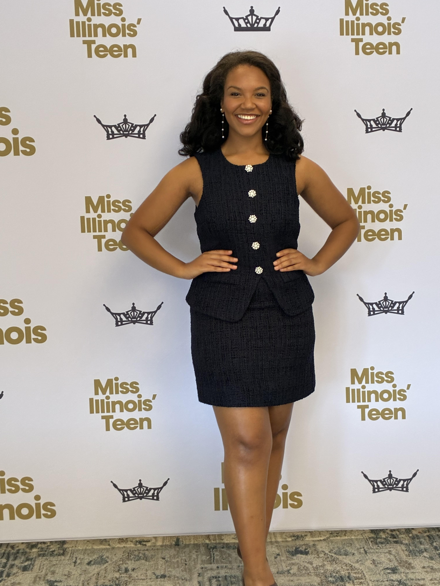
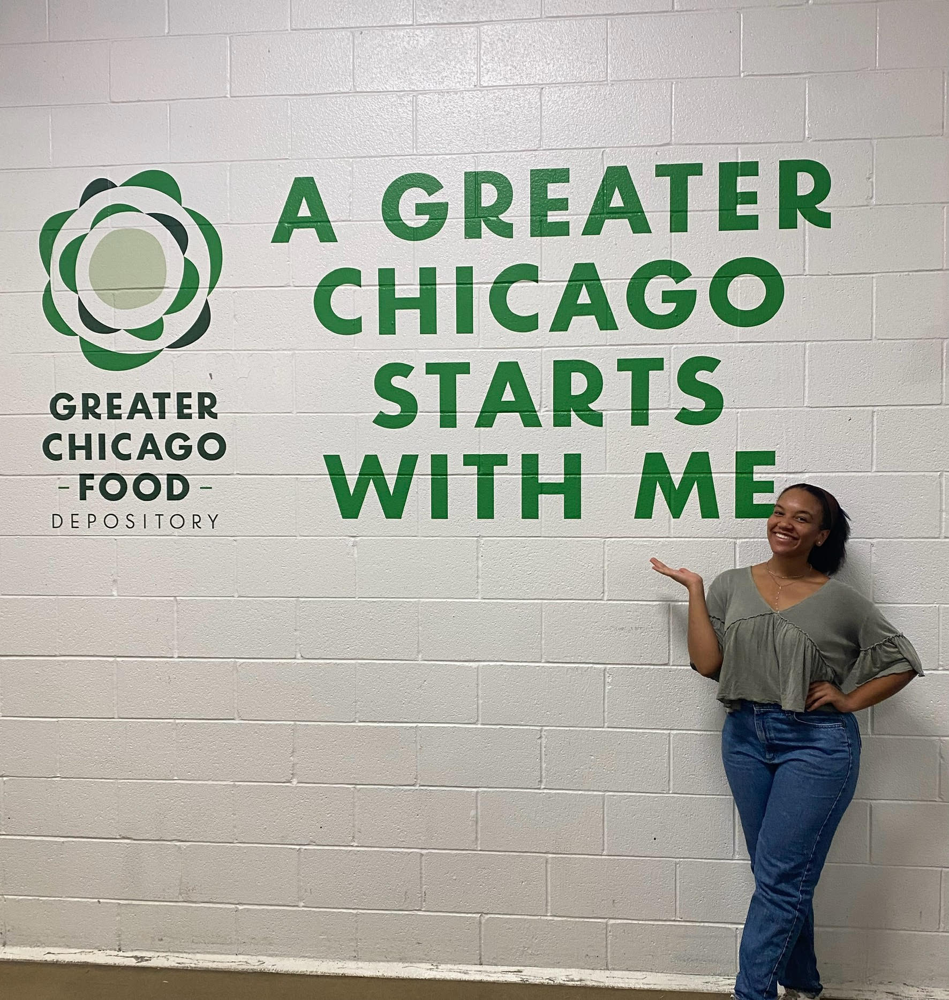
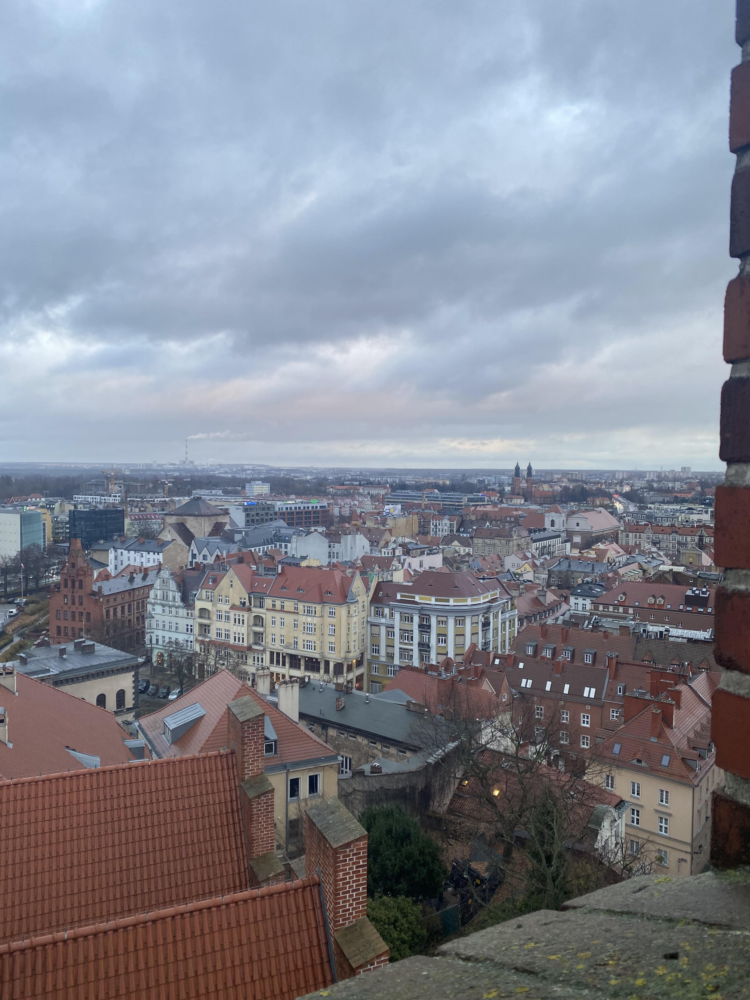
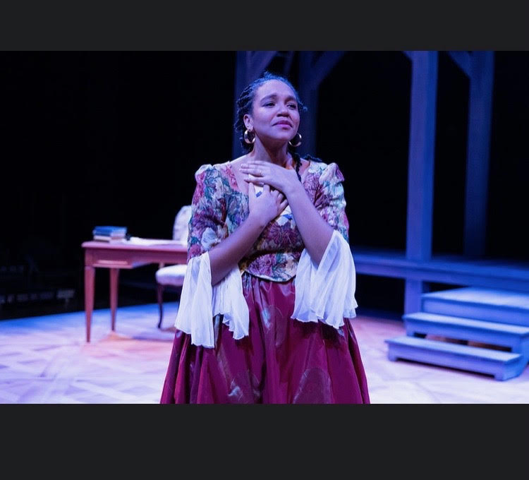
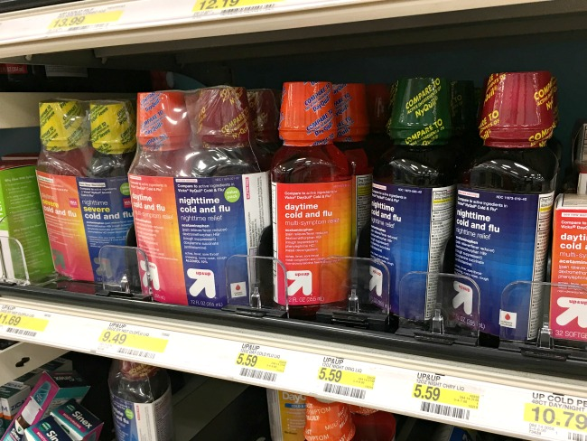
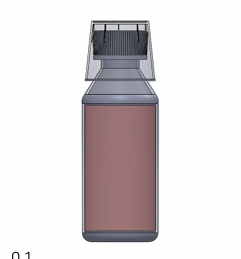
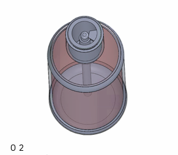
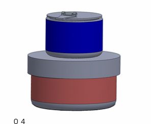

As a theatre and engineering major, my ability to connect with the user and explore the emotional and behavioral landscape of their experiences with products and environments has enabled me to design products and experiences that solve the problems that provoke emotional reactions (anger, sadness, frustration, and more) and invite users to reframe mundane tasks into playful, fun experiences.
2022
Joined ASME Executive Board
Start at Northwestern University
2023
Bagel Slicer Whitespace Project
Wagner Historical Farm House Project
2024
Engineering Summer Camp Instructor
Egg Manipulator Project
2025
Summer Internship with Focal Point
6-month Co-Op with Marks by SGS & Co
2026
Snapping Turtles Project
The Winter Guard Play Scenic Design
Selected Projects
CVS Medicine Bottle
Sustainable liquid medicine packaging that makes dosing safer and easier.
Clamp & Cut Bagels
Hands-free bagel slicer for safe, even cuts every time.
Snapping Turtles
CNC-machined two-piece model using NX, CAD, and CAM.
📸 Your main portrait Replace with <img src="portrait.jpg">

📸 Photo 1
Pre-interview competition photo at the Miss NorthernSuburbs Illinois America Pageant. Pageantry introduced me to service and taught me how to articulate myself in interviews, give public speeches with confidence, and have empowered me to accomplish any ambitious goal I set for myself.
📸 Photo 2
Smiling at the intercollegiate black cookout with my friends at UChicago in 2025!💚

📸 Photo 3
Volunteering at the Greater Chicago Food Depository — giving back to the city that shapes and supports me! 🍽️

📸 Photo 4
Travel photo from my time in Poznan, Poland! I love to travel, and my international experiences have made me more open-minded, empathetic, and understanding of different life experiences.✈️
📸 Photo 5
Laser Cutting one of the Wagner Historical Farm prototypes for user testing with kids! 🛠️

📸 Photo 6
On stage in my first Northwestern Wirtz Theatre production — Theatre taught me how to connect to stories and experiences that aren't my own and engage hundreds of people using storytelling. Because of theatre, I'm able to design with empathy. 🎭
📸 Photo 7
My first collegiate study abroad experience in Edinburgh, Scotland. Studying abroad taught me resilience, cultural humility, and adaptability! 🌆
📸 Photo 8
I love sports and cheering on my team (whatever team that may be)! I even did color guard my freshman year! One of my favorite teams to cheer for is Northwestern! Go Cats!
I'm incredibly passionate about combining my technical skills, creative problem solving mindset, and storytelling ability to design products that give users — especially kids — meaningful and fun experiences. I challenge myself to design and build solutions for problems that don't have definitive answers, and I use storytelling to always find and design for the root problems in human experiences.
Client: Marks by SGS & Co / CVSTimeline: 16 weeks · March 2025 – June 2025
Liquid Medicine Bottle Dosing
Redesigning CVS liquid medicine packaging to make dosing safer, more accurate, and more sustainable — especially for parents with young children.
Product DesignPackagingSustainabilitySolidWorks3D Printing (J55)User Research

8CVS stores visited
5high-fidelity prototypes
4final concepts
J55full-color 3D printer
💊
The Challenge
Parents dosing liquid medicine for their children face dosing inaccuracies, lost cups, hygiene issues, and non-recyclable waste — every single time.
The Process
Click each step to learn more ↓
Step 1
Discover
Visited 8 CVS stores, mapped 6 user journey scenarios, and identified liquid medicine dosing as a high-impact opportunity space through consumer research and social media analysis.
﹀
I visited eight CVS stores in Evanston and Chicago to document real consumer pain points — from leaking makeup wipe pouches to ineffective store layouts. I also mined Reddit, TikTok, and Twitter for complaints. Through this research and a personal experience needing Benadryl without an accurate dosing cup, I identified liquid medicine dosing as my opportunity space. A key finding: 3 out of 4 Americans still rely on kitchen teaspoons to measure doses, and researchers confirm that dosing cup errors increase significantly compared to oral syringes. My primary user persona: parents dosing liquid medicine for young children.
Visited 8 CVS stores in Evanston & Chicago
Searched Reddit, TikTok & Twitter for complaints
Built 6 journey maps for key dosing scenarios
Primary persona: parents with young children
Step 2
Define
Benchmarked the existing CVS dosage cup against four evaluation criteria to pinpoint the unattached cup as the root cause of dosing inaccuracy, hygiene risk, and unsustainable waste.
﹀
Accurate Dosing
Cleaning & Storage
Ease of Use
Ease of Manufacturing
🔴 = current CVS benchmark | scale: – to +
Problem Statement:
Unattached dosage cups create dosing inaccuracies, hygiene issues, and non-recyclable waste — making medication routines frustrating and unsafe, especially for parents.
I benchmarked the existing CVS Health Children's Allergy Relief bottle against four evaluation criteria — accurate dosing, cleaning & storage, ease of use, and ease of manufacturing. The current dosage cup sits loose on the bottle after first use, relies entirely on the user's visual judgment to fill accurately, and is made of non-recyclable plastic. After mapping six user journey scenarios (opening & first dispense, wash & store, transportation, and disposal), the core problem became clear: the unattached dosage cup is the root cause of inaccurate dosing, hygiene risk, and unnecessary waste.
Step 3
Ideate
Explored 16+ packaging formats across the liquid consumables market and mapped four distinct concepts onto a 2×2 framework to balance innovation with manufacturing feasibility.
﹀
I explored a wide range of packaging formats for inspiration — squeezable pouches, pull-and-squeeze bottles, spray and dropper systems, stackable containers, and even candy delivery formats like dissolving strips. Using a 2×2 concept framework mapping Product Format (existing → new) against Packaging Format (familiar category norms → differentiated), I placed four concepts: Toupee (existing packaging, existing product), Python (new packaging, existing product), Surgeon (new packaging, existing product), and Wildcard (new packaging, new product format — popping medicine capsules inspired by boba).
Step 4
Prototype
Developed and 3D printed four proof-of-concept prototypes — ranging from an incremental cap redesign to a completely new seaweed-based capsule format — each evaluated against the same benchmark criteria.
I 3D printed proof-of-concept prototypes for all four concepts using SolidWorks and a J55 full-color printer. Toupee modifies the bottle cap ridges for a snug dosage cup fit, keeping one manufacturing change. Python integrates the dosage cup into the bottle via a straw canal — the user squeezes medicine up and out. Surgeon follows expert recommendation by adding an integrated syringe into the bottle neck — turn the cap to set the dose, pull to fill, push to dispense. Wildcard is the most innovative: liquid medicine held in seaweed-based popping capsules (inspired by boba), dispensed one capsule at a time from a two-chamber CRC-locked container — eliminating the dosage cup entirely.
Final Prototypes
Hover each concept to see its evaluation ↓

Concept 1: Toupee
Integrated flip-top dosing
Toupee
Accurate Dosing
Ease of Use
Manufacturing
Familiar format with improved accuracy

Concept 2: Python
Squeeze-and-dose cup
Python
Accurate Dosing
Ease of Use
Manufacturing
Eliminates the loose dosage cup entirely
Concept 3: Surgeon
Syringe-pull dispensing cap
Surgeon
Accurate Dosing
Ease of Use
Manufacturing
Maximum precision — best for parents

Concept 4: Wildcard
Twist-measure integrated cap
Wildcard
Accurate Dosing
Ease of Use
Manufacturing
High accuracy + compact storage
Across 4 concepts and 5 high-fidelity SolidWorks prototypes, this project demonstrated how reframing a mundane daily task — dosing liquid medicine — through the lens of user behavior and sustainability can yield solutions that range from incremental manufacturing improvements to entirely new product formats.
See the Full Report 📄
Research, journey maps, benchmarking & full prototype evaluation.
Client: Northwestern University CommunityTimeline: 10 weeks · Spring 2023
Clamp & Cut Bagels
A self-centering bagel slicer that delivers a safe, even, crumb-minimal cut — no exposed blades, no crushed bagels, no fingers near the blade.
Mechanical DesignBenchmarking & Journey Mapping3D PrintingRapid PrototypingPatent Research
175+problems surveyed
4team members
2mockup designs tested
6user tests conducted
🥯
The Challenge
Northwestern dining hall bagel cutters crush, tear, and unevenly slice bagels — and pose safety risks since exposed serrated knives aren't allowed. Students needed a solution that was safe, clean, easy to use, and actually worked.
The Process
Click each step to learn more ↓
Step 1
Discover
Surveys · Need-finding · Problem selection
﹀
We surveyed 61 people ranging from age 18–75 and gathered 175+ problems. After multiple rounds of coding and interviews, we narrowed down to two finalists — an inconsistent bagel slicer and uneven dining tables. Patent research and benchmarking at Sargent Dining Hall confirmed the bagel slicer had the most room for innovation.
61 survey respondents, 175+ problems collected
Three coding rounds to narrow to top 5, then top 2
Interviews with Northwestern students confirmed the bagel problem was felt regularly
Benchmarked guillotine slicer at Sargent Dining Hall — consistent crushing and uneven cuts
Step 2
Define
Requirements · Benchmarking · User needs
﹀
We benchmarked three existing products — a cheese slicer, handheld slicer, and guillotine slicer — against a detailed requirements matrix. The guillotine scored a 2/5 on crush level and 1/5 on crumb cleanliness. The handheld slicer performed best but still left fingers near the blade. These gaps defined our four core requirements: performance, safety, cleanliness, and ease of use.
Key Requirements:
50/50 even slice (allowable: 65/35) · No exposed or removable blade · User's fingers never near the blade · Crumb level 4/5 or better · Intuitive with zero learning curve
Step 3
Ideate
Brainstorming · Patent research · Concept development
﹀
We researched six patents spanning 1987–2018 to understand what existed and where the gaps were. A key insight came from a mobile phone car mount patent — its spring-loaded clamp-and-release mechanism became the foundation of our centering system. Two mockup concepts emerged: a clamping mechanism (Mockup 1) and a rotating handle mechanism (Mockup 2).
6 patents reviewed across multiple decades
Phone mount clamp (CN208257882U) inspired the centering mechanism
Serrated blade confirmed optimal via prior art — guillotine flat blade found inferior
Step 4
Prototype & Test
Two mockups · 6 user tests · Iterative refinement
﹀
Three users tested each mockup without instructions — we encouraged them to think aloud. The rotating handle consistently failed to cut through the bagel (70% tearing, crush level 1/5). The clamping mechanism held the bagel independently, achieved 40–45% : 55–60% slices, and scored 4/5 on crush level. Users unanimously preferred Mockup 1. It became the basis for the final Clamp & Cut prototype.
Mockup 2 (rotating): 70% tearing rate, did not cut through in 2 of 3 tests
Mockup 1 (clamping): held bagel independently, 4/5 crush level, no exposed blade
4 additional external users tested final benchmarks for comparative data
Final Prototypes
The Clamp & Cut
The final Clamp & Cut features three integrated components: a housing with 54°-angled planes to stabilize any bagel size, a 7" stainless steel serrated blade with a plastic guard and rubber-coated handle, and a phone-mount-inspired spring clamp that centers the bagel and releases with a single button press. The blade is contained within the housing — it cannot be removed — and the user's fingers never enter the cutting path. The design was 3D printed and satisfies all four core requirements: even performance, safety, cleanliness, and intuitive ease of use.
See the Final Report 📄
Full research, user testing data, benchmarking & prototype documentation.
Northwestern University · MFG & Design EngineeringTimeline: 2026
Snapping Turtles
Designing and manufacturing a two-piece injection-molded plastic turtle — from concept and CAD through mold design, CNC machining, and final production.
Design and manufacture a plastic injection-molded part entirely from concept to production — navigating the real constraints of three-axis CNC milling, injection molding DFM, press-fit assembly, and statistical process control, all within a single quarter.
The Process
Click each step to learn more ↓
Step 1
Concept & CAD Design
Sketching · Part geometry · DFM constraints
﹀
We chose a small plastic turtle because its shell, head, and leg geometry offered enough complexity to incorporate multiple manufacturing features while remaining within the constraints of a three-axis CNC mill and injection molding process. The turtle was split into two halves — top and bottom — designed to be molded separately and assembled via press-fit connections. Several design iterations were made: the eyes were removed (overhang couldn't be machined on a 3-axis mill), the tail was eliminated to reduce mold complexity, and the shell was simplified to reduce machining time. A nominal wall thickness of 1/16", 1° draft angles on all vertical faces, and fillets throughout were applied to improve moldability, reduce sink marks, and ensure clean ejection.
1/16" nominal wall thickness to minimize sink marks and warpage
1° draft angles on all vertical faces for clean mold ejection
Eyes and tail removed — unmachineable overhangs on 3-axis mill
Press-fit assembly used; snap fits removed due to modeling and machining complexity
Step 2
Mold Design
Parting line · Runner system · Shrinkage compensation
﹀
The parting line was placed along the natural edge of the shell — the most symmetrical orientation — to avoid undercuts and allow all features to be accessed via standard end milling. The part was oriented lengthwise in the mold blank to maximize clearance from the sprue and prevent flash. Cavity dimensions were adjusted to account for plastic shrinkage. The runner system used opposing entries — one into the turtle's head, one into the opposite end of the shell — to equalize fill time and promote uniform flow. A circular 0.25" diameter runner was selected for efficient flow and low pressure loss.
Parting line at natural shell edge — no undercuts, clean separation
Cavity dimensions scaled up to compensate for shrinkage
Opposing runner entrances (head & tail end) to equalize fill time
Circular 0.25" runner — optimal flow, minimal pressure loss
Runner placed 0.030" from part geometry to allow manual gate filing
Step 3
CNC Machining
CAM programming · 4 mold halves · ~11 hours total
﹀
Four separate molds were CNC machined — core and cavity for both the top and bottom turtle halves — totaling approximately 11 hours of machining time. Each mold used a sequence of adaptive roughing, floor/wall finishing, area milling, and planar operations with tools ranging from 0.5" end mills down to 0.0625" ball mills for fine surface detail. A key mid-project challenge: the original #51 drill bit (0.0595") for the press-fit holes snapped during the first machining run due to its fragility. The feature was redesigned — hole diameter increased ~60% to a 3/32" (0.0938") drill, and the mating pin upsized to 0.096" — allowing successful completion. Chatter during machining also slightly damaged the small lips around the dowel pin holes, which ultimately affected assembly quality.
Bottom core: 2h 35min · Bottom cavity: 3h 21min
Top core: 2h 27min · Top cavity: 2h 32min
#51 drill bit broke mid-run — redesigned to 3/32" drill, 0.096" pin
Chatter damaged press-fit lip geometry — impacted final assembly fit
Step 4
Injection Molding & Metrology
Process tuning · 20 parts · Statistical process control
﹀
Barrel and nozzle temperatures were set to 450°F, though the nozzle fluctuated around 400°F throughout. Injection times of 5–10 seconds were tuned based on cavity volume and live nozzle temperature. Short shots emerged mid-run — traced to polymer pellet buildup in the chamber. Cleaning every 3–4 cycles resolved the issue. Part ejection by pulling the legs caused slight upward bending of the thin leg features, complicating press-fit assembly. Despite these challenges, the final parts had good surface finish with no visible sink marks or warpage. A metrology study on the overall width (nominal 1.80") across 20 top and 20 bottom parts revealed process instability — multiple out-of-control conditions were identified on both run charts — attributed to nozzle temperature variation, pellet buildup, and multi-operator measurement variability.
Top halves: 3 of 20 outside spec limits · Bottom halves: 16 of 20 outside spec limits
Bottom parts consistently narrower — attributed to mold geometry differences and process drift over the session
Pellet chamber cleaning every 3–4 cycles eliminated short shots
Final Prototypes
The Snapping Turtle
The final Snapping Turtle is a two-piece injection-molded plastic assembly connected via press-fit pins and holes. The top shell features a layered geometry and longer head; the bottom half provides a flat base and matching leg geometry. Both halves showed good surface finish and minimal defects. The metrology study revealed process instability — particularly in the bottom halves — highlighting the impact of nozzle temperature variation, pellet buildup, and ejection deformation on dimensional accuracy. Key takeaways: early investment in robust press-fit geometry, better ejection features, and tighter injection parameter control would meaningfully improve part consistency in future production runs.
See the Final Report 📄
Full design documentation, CAM operations, metrology study & manufacturing reflections.
Northwestern University · ME240Introduction to Mechanical Design and Manufacturing
Egg Manipulator 🥚
Designing, iterating, and 3D printing a robot arm end effector capable of picking up and moving a raw egg — tested live on a preprogrammed robot arm.
Mechanical Design3D PrintingFEA AnalysisIterationRobot End EffectorTeam Project
📸 Add hero image <img src="egg-hero.jpg">
10lab iterations
2part components
FEA+ physical testing
1mmdisplacement test target
🥚
The Challenge
Design and 3D print a two-piece end effector that mounts to a robot arm via dovetail connector and successfully picks up and moves a raw egg through a preprogrammed routine — without breaking it.
The end effector was designed as two components — a top piece and a bottom piece — connected via pinned joints to allow the gripper to articulate around the egg. Simplified hand calculations were performed for both parts using the base design from the Lab 5/6 assignment as a starting point, focusing primarily on the length of each component rather than localized stress regions. These calculations gave us a conservative estimate of expected behavior going into FEA analysis.
Two-piece design: top and bottom components connected at pinned joints
Dovetail connector for mounting to the robot arm
Hand calculations focused on overall part length — used as baseline before FEA
Design built upon base geometry from Lab 5/6 rather than starting from scratch
📸 FEA simulation — top piece <img src="fea-top.jpg">
FEA simulations were run on both components using fixed and pinned constraint setups. The FEA consistently calculated higher stresses than our hand calculations — expected, since FEA uses the full stress tensor across discrete elements and can overestimate in areas of complex geometry. A notable stress concentration appeared at the base of the top hole in the top component, caused by the pin constraint preventing full rotation and generating localized stress as the part tried to rotate. Fixed constraints produced larger reaction forces than pinned constraints; pinned constraints allowed more freedom of movement, reducing the force required to displace the component 1mm. The egg grabber spring also applies a counteracting axial force not captured in the FEA setup — in reality this would significantly reduce displacement from the egg load.
FEA stresses exceeded hand calc estimates — FEA captures full stress tensor vs. simplified assumptions
High stress concentration at top hole base — pin constraint prevents free rotation
Fixed constraints → larger reaction forces; pinned constraints → more deformation but smaller forces
Spring/egg grabber axial force not modeled — would counteract egg-load displacement in reality
Step 4
Final Testing
Robot arm assembly · Live egg test · Results
﹀
📸 End effector mounted to robot arm <img src="egg-mounted.jpg">
📸 Live egg test <img src="egg-test.jpg">
Add your blurb here — describe the final test day experience. Did your end effector successfully move the egg? What happened, and what did you take away from the live test?
Final Prototypes
The End Effector
📸 Final end effector — assembled <img src="effector-final.jpg">
📸 Top & bottom components <img src="effector-parts.jpg">
📸 Mounted on robot arm <img src="effector-mounted.jpg">
The final end effector is a 3D-printed two-piece assembly that mounts to the robot arm via a dovetail connector. The top and bottom pieces articulate at pinned joints to grip the egg. Key design decisions — including joint placement, wall geometry, and the use of a spring-loaded egg grabber — were validated through multiple rounds of FEA analysis and physical iteration across 10 labs. If redesigned for mass production, changes would include material substitution away from PA12 (SLS nylon) to reduce environmental impact, redesigned ejection features, and tighter interference fit tolerances for more consistent assembly.
Northwestern UniversityTimeline: 2023
Wagner Historical Farm House 🏡
Restoration and redesign project preserving the character of a historical farm house while meeting modern accessibility standards.
DesignHistoryRestorationStorytelling
📸 Add hero image <img src="wagner-hero.jpg">
🏡
The Challenge
Add your problem statement here — describe the challenge of balancing historical preservation with modern design needs.
The Process
Click each step to learn more ↓
Step 1
Discover
Historical research · Site visits · Context
﹀
📸 Add image
📸 Add image
Add your blurb here.
Step 2
Define
Constraints · Accessibility · Preservation goals
﹀
📸 Add image
📸 Add image
Add your blurb here.
Step 3
Ideate
Design concepts · Material selection · Drawings
﹀
📸 Add image
📸 Add image
Add your blurb here.
Step 4
Present
Community panel · Feedback · Final proposal
﹀
📸 Add image
📸 Add image
Add your blurb here.
Final Prototypes
📸 Final drawing 1
📸 Final drawing 2
📸 Final drawing 3
Add your blurb here — describe the final proposal and community response.
See the Final Report 📄
Full research, design drawings, accessibility proposals & community presentation.


.png)